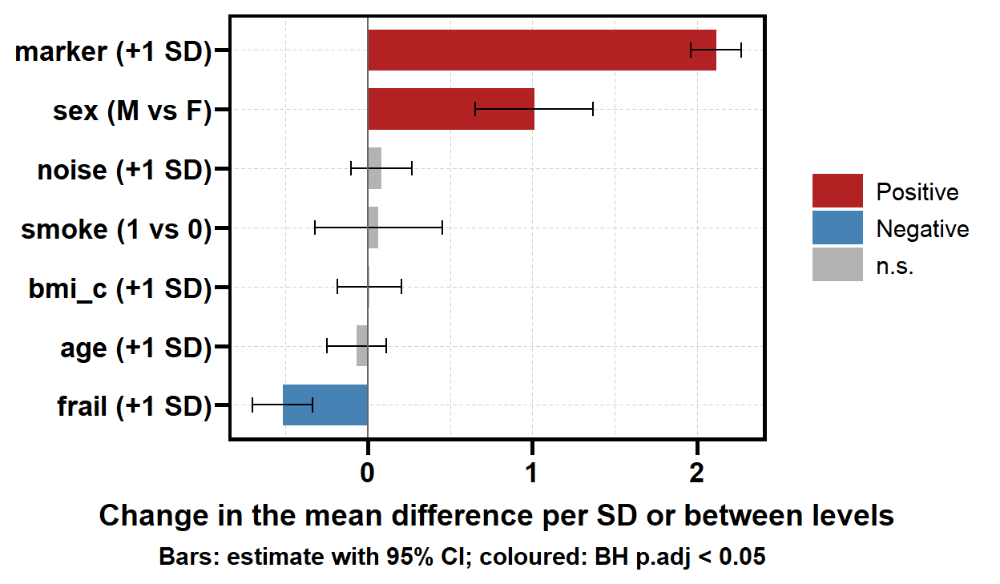
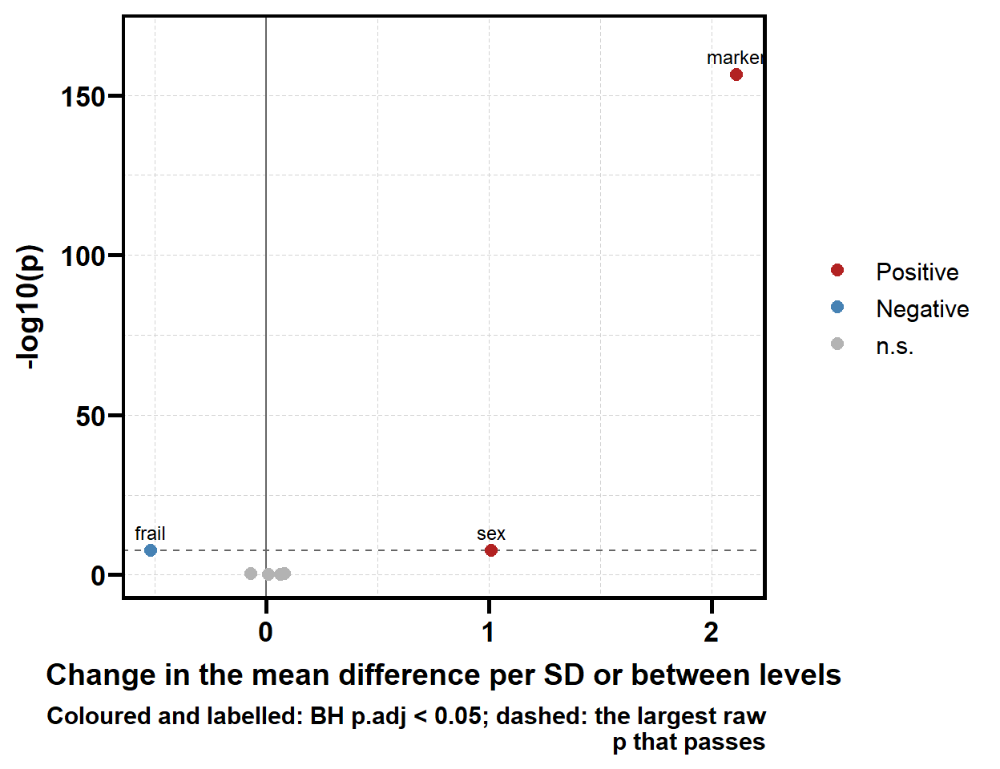
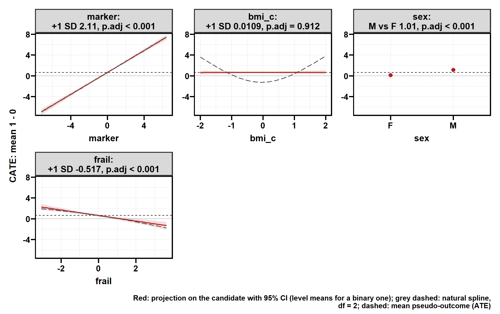
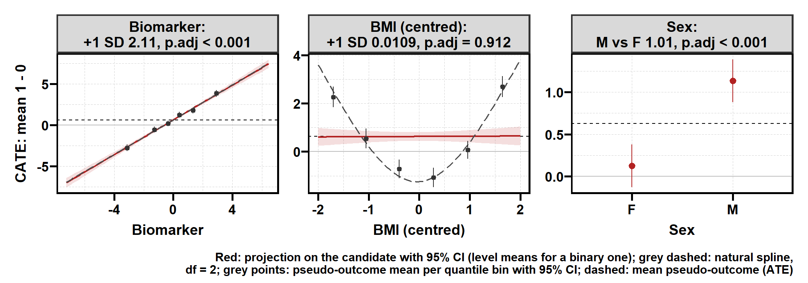

set.seed(20260928)
n <- 1500
d <- data.frame(
age = round(rnorm(n, 60, 10)), # 混杂 + 预后
marker = round(rnorm(n, 0, 2), 2), # 线性修饰，SD = 2
frail = round(rnorm(n), 2), # 混杂 + 负向修饰
bmi_c = round(runif(n, -2, 2), 2), # U 形修饰
sex = factor(sample(c("F", "M"), n, replace = TRUE)), # 二值修饰
smoke = rbinom(n, 1, 0.3), # 噪声
noise = round(rnorm(n), 2)) # 噪声
d$z <- rbinom(n, 1, plogis(0.04 * (d$age - 60) + 0.3 * d$frail))
tau <- d$marker - 0.5 * d$frail + (d$sex == "M") + 1.2 * (d$bmi_c^2 - 4 / 3)
d$y <- round(0.05 * (d$age - 60) + 0.5 * d$frail + d$z * tau + rnorm(n), 3)
adj <- c("age", "marker", "frail", "bmi_c", "sex", "smoke", "noise")6. 效应修饰变量的单变量筛选：get_hte_unihtee() 与 plt_hte_unihtee()
causalR 包函数手册
get_hte_unihtee() 回答的问题只有一个：候选协变量里，哪些变量身上的治疗效应 和平均水平不一样？ 它对每个候选变量 \(W_j\) 单独估计一个带方向的效应量、置信区间和 BH 校正后的 p 值，形态是一张「按 p 值排序的变量表」，适合当高维筛选的第一道工序； plt_hte_unihtee() 把这张表画成柱状图、火山图，或逐变量的依赖图。
估计量是 unihtee 包的 TEM-VIP（treatment effect modifier variable importance parameter，Boileau et al., 2025），但不依赖 unihtee 包本身：本站的 unihtee 手册记录了它默认调用下的几处静默错误，这里换了一条实现路线。
| 函数 | 做什么 | 与其它函数的关系 |
|---|---|---|
get_hte_unihtee() |
逐变量估计 TEM-VIP，给区间、p 值、BH 校正 | 双稳健得分来自 get_hte() 的因果森林，或交叉拟合的 GLM |
plt_hte_unihtee() |
"bar" / "volcano" / "dep" 三种图 |
依赖图的直线与表中估计逐位一致 |
安装与核对环境
remotes::install_github("HUI950319/causalR")
install.packages(c("grf", "sandwich", "patchwork"))本页核对于 2026 年 9 月 28 日，代码块由本站渲染时真实执行：
| 项目 | 值 |
|---|---|
| causalR | 0.0.0.9000（GitHub main） |
| grf / sandwich | 2.6.1 / 3.1.3 |
估计的是什么
对每个候选变量 \(W_j\)，TEM-VIP 是条件平均治疗效应（CATE）在 \(W_j\) 上的一元最小二乘斜率：
\[ \Psi_j = \frac{\operatorname{Cov}\bigl[\tau(X),\, W_j\bigr]}{\operatorname{Var}[W_j]}, \qquad \tau(X) = \mathbb{E}[Y \mid A = 1, X] - \mathbb{E}[Y \mid A = 0, X]. \]
\(\tau(X)\) 观测不到，于是用 AIPW 伪结局代替：它对 \(X\) 的条件均值就是 \(\tau(X)\)， 倾向评分模型与结局模型只要一个正确就成立（双稳健）。把伪结局对 \(W_j\) 做一元回归， 斜率就是 \(\Psi_j\) 的估计，标准误取 HC3 稳健误差。这正是 unihtee 的一步（one-step）估计量。
三点读法：
- 连续变量报「每 1 个 SD」的斜率（
contrast = "+1 SD"），各变量可以直接比大小； 二值变量报两水平之差（如"M vs F"）。 - 它是边际量，不是偏效应。 与真修饰变量相关的无关变量，自己的斜率也不为 0。
- 它只看直线。 U 形修饰的斜率真值就是 0，会被漏报——下面的例子专门埋了一个。
示例数据：真值已知的连续结局
治疗分配依赖 age 和 frail，所以这是一份有混杂的观察性数据。 按上式，每个变量的 TEM-VIP 真值是：
| 变量 | 修饰方式 | TEM-VIP 真值 |
|---|---|---|
marker |
线性，\(\tau\) 每单位 +1，SD = 2 | +2（每 SD） |
frail |
线性，每单位 −0.5，SD = 1 | −0.5（每 SD） |
sex |
M 比 F 高 1 | +1（M vs F） |
bmi_c |
U 形 \(1.2(x^2 - 4/3)\)，在 \([-2, 2]\) 上对称 | 0——修饰很强，但斜率为 0 |
age、smoke、noise |
不修饰 | 0 |
get_hte_unihtee()：逐变量的筛选表
res <- get_hte_unihtee(d, cat_var = "z", adj_var = adj, surv = "y",
grf_args = list(num.trees = 1000))
res$vip
#> # A tibble: 7 × 12
#> variable type contrast n sd measure estimate std.error conf.low
#> <chr> <chr> <chr> <int> <dbl> <chr> <dbl> <dbl> <dbl>
#> 1 marker continuous +1 SD 1500 2.01 diff 2.11 0.0792 1.96
#> 2 frail continuous +1 SD 1500 0.972 diff -0.517 0.0930 -0.699
#> 3 sex binary M vs F 1500 NA diff 1.01 0.183 0.652
#> 4 noise continuous +1 SD 1500 0.999 diff 0.0833 0.0933 -0.0995
#> 5 age continuous +1 SD 1500 9.68 diff -0.0674 0.0922 -0.248
#> 6 smoke binary 1 vs 0 1500 NA diff 0.0655 0.197 -0.320
#> 7 bmi_c continuous +1 SD 1500 1.16 diff 0.0109 0.0986 -0.182
#> # ℹ 3 more variables: conf.high <dbl>, p.value <dbl>, p.adj <dbl>默认 method = "grf"：内部调用一次 get_hte() 拟合因果森林，用它的袋外 AIPW 得分， 因此交叉拟合是自带的。candidate_var = NULL 时检验 adj_var 里的全部变量； 表内按 p.value 排序，p.adj 是同一尺度内全部候选变量的 BH 校正。
与真值对照
truth <- c(marker = 2, frail = -0.5, sex = 1, bmi_c = 0, age = 0, smoke = 0, noise = 0)
v <- res$vip
data.frame(variable = v$variable, contrast = v$contrast,
truth = truth[v$variable], estimate = round(v$estimate, 3),
conf.low = round(v$conf.low, 3), conf.high = round(v$conf.high, 3),
covered = v$conf.low <= truth[v$variable] & v$conf.high >= truth[v$variable],
row.names = NULL)
#> variable contrast truth estimate conf.low conf.high covered
#> 1 marker +1 SD 2.0 2.114 1.959 2.269 TRUE
#> 2 frail +1 SD -0.5 -0.517 -0.699 -0.335 TRUE
#> 3 sex M vs F 1.0 1.010 0.652 1.368 TRUE
#> 4 noise +1 SD 0.0 0.083 -0.100 0.266 TRUE
#> 5 age +1 SD 0.0 -0.067 -0.248 0.113 TRUE
#> 6 smoke 1 vs 0 0.0 0.065 -0.320 0.451 TRUE
#> 7 bmi_c +1 SD 0.0 0.011 -0.182 0.204 TRUEmarker、frail、sex 三个线性或二值修饰变量都被找到，方向与大小接近真值。 bmi_c 的斜率是 0.011（p.adj = 0.912）——表上它和噪声没有区别， 这是 TEM-VIP 的定义决定的，不是估计误差。它的真实形状要到依赖图里看 （依赖图）。
参数
| 参数 | 默认 | 说明 |
|---|---|---|
data |
— | 数据框 |
cat_var |
— | 二分类暴露列：0/1、逻辑型，或两水平因子 / 字符（第二个水平是治疗组） |
candidate_var |
NULL |
候选修饰变量；NULL 为 adj_var 全部。数值列超过两个取值按连续处理；恰好两个取值（任何类型）按二值处理；三水平以上的分类变量报错，请先拆成 0/1 哑变量 |
adj_var |
NULL |
干扰模型调整的协变量；实际调整的是 adj_var 与 candidate_var 的并集 |
surv |
TRUE |
同 get_hte()：TRUE 读 time + DSS（只能走 "grf"）；一个列名为连续或 0/1 结局 |
method |
"grf" |
"grf" 用 get_hte() 的森林得分；"glm" 用 logistic 倾向模型 + 分臂结局 GLM 的 K 折交叉拟合，不种森林 |
measure |
"diff" |
可多选 "diff" / "ratio" / "OR"，口径同 get_hte() |
conf_level |
0.95 |
Wald 区间的置信水平 |
time |
120 |
生存结局的时间点，仅 surv = TRUE |
grf_args |
list() |
转给 get_hte() / grf，如 num.trees；不写 seed 时用下面的 seed |
glm_args |
list() |
folds（默认 5，按臂分层）与 ps_trim（默认 0.01，倾向评分截断到 \([0.01, 0.99]\) 并警告截断行数） |
seed |
123 |
交叉拟合的分折种子（结束后恢复全局随机数状态），或森林种子 |
verbose |
FALSE |
报告删掉的不完整行 |
返回对象
返回普通列表 list(vip, data)：
| 元素 | 内容 |
|---|---|
$vip |
每个候选变量 × 尺度一行：variable、type、contrast、n、sd、measure、estimate、std.error、conf.low、conf.high、p.value、p.adj |
$data |
分析用的行，外加 .ps（倾向评分）、.mu1 / .mu0（两臂预测结局）和每个尺度一列伪结局 .score_<measure>；"grf" 路线另有 get_hte() 的 .cate 与 .dr_score |
attr(, "analysis") |
调整的协变量、候选变量的类型与水平、后端参数等，供 plt_hte_unihtee() 使用 |
表里的估计值可以用 $data 手算复核——它就是伪结局对标准化变量的回归斜率：
dd <- res$data
c(by_hand = unname(coef(lm(.score_diff ~ I(marker / sd(marker)), data = dd))[2]),
table = v$estimate[v$variable == "marker"])
#> by_hand table
#> 2.114069 2.114069两条路线：森林与 GLM
method = "glm" 不种森林：倾向评分用 logistic 回归，结局在两臂各拟合一个 GLM， 5 折交叉拟合。本例两臂的结局模型都漏了 bmi_c 的平方项（设定错误）， 但倾向评分模型是对的，双稳健性保证估计仍然一致：
res_glm <- get_hte_unihtee(d, cat_var = "z", adj_var = adj, surv = "y",
method = "glm")
g <- res_glm$vip
data.frame(variable = v$variable, truth = truth[v$variable],
grf = round(v$estimate, 3),
glm = round(g$estimate[match(v$variable, g$variable)], 3),
row.names = NULL)
#> variable truth grf glm
#> 1 marker 2.0 2.114 2.069
#> 2 frail -0.5 -0.517 -0.587
#> 3 sex 1.0 1.010 1.077
#> 4 noise 0.0 0.083 0.072
#> 5 age 0.0 -0.067 -0.128
#> 6 smoke 0.0 0.065 -0.031
#> 7 bmi_c 0.0 0.011 0.126在模拟中（另行运行，未在本站渲染时执行）："glm" 路线在连续、二分类结局的 差值、比、比值比三种尺度上，95% 区间覆盖率为 0.94–0.97（各 300 次重复）； 无修饰时单变量拒绝率 4.5%。"grf" 路线用默认 2000 棵树重复 100 次，覆盖率 0.92–0.98。
与 grf 和 get_hte() 的对账
"grf" 路线的每一行都等于 grf 自带的线性投影检验：
hte <- get_hte(d, cat_var = "z", adj_var = adj, surv = "y",
grf_args = attr(res, "analysis")$backend_args)
blp <- grf::best_linear_projection(hte$fit, A = cbind(marker = d$marker / sd(d$marker)))
rbind(grf = blp["marker", 1:2],
get_hte_unihtee = c(v$estimate[v$variable == "marker"],
v$std.error[v$variable == "marker"]))
#> Estimate Std. Error
#> grf 2.114069 0.07915379
#> get_hte_unihtee 2.114069 0.07915379get_hte()$importance$p_het 检验的是同一个单变量投影，只是用 2 自由度的自然样条 代替直线。所以对 U 形的 bmi_c，两个 p 值给出相反的结论：
imp <- hte$importance
data.frame(variable = imp$variable, p_het = signif(imp$p_het, 3),
tem_vip_p = signif(v$p.value[match(imp$variable, v$variable)], 3),
row.names = NULL)
#> variable p_het tem_vip_p
#> 1 marker 9.08e-156 3.76e-157
#> 2 bmi_c 6.55e-68 9.12e-01
#> 3 frail 1.92e-07 2.73e-08
#> 4 sex 3.12e-08 3.19e-08
#> 5 noise 5.62e-01 3.72e-01
#> 6 age 7.01e-01 4.65e-01
#> 7 smoke 7.39e-01 7.39e-01bmi_c 的 p_het 是 6.55^{-68}， 而 TEM-VIP 的 p 值是 0.912。 要方向和大小时看 TEM-VIP，要不漏非线性修饰时看 p_het，两者一起读。
相对尺度
measure 取 "ratio" / "OR" 时，投影的是对数风险比 / 对数比值比。 估计值和区间报取指数后的值——变量每增加 1 SD（或二值变量换一个水平）， 风险比乘上的倍数；std.error 仍在对数尺度，与 get_hte() 一致。
db <- d
db$y <- rbinom(n, 1, plogis(-1 + 0.03 * (d$age - 60) + d$z * (0.2 + 0.25 * d$marker)))
rb <- get_hte_unihtee(db, cat_var = "z", adj_var = adj, surv = "y",
method = "glm", measure = c("diff", "ratio", "OR"))
rb$vip[rb$vip$variable == "marker", ]
#> # A tibble: 3 × 12
#> variable type contrast n sd measure estimate std.error conf.low
#> <chr> <chr> <chr> <int> <dbl> <chr> <dbl> <dbl> <dbl>
#> 1 marker continuous +1 SD 1500 2.01 diff 0.0774 0.0240 0.0303
#> 2 marker continuous +1 SD 1500 2.01 ratio 1.39 0.0980 1.14
#> 3 marker continuous +1 SD 1500 2.01 OR 1.54 0.131 1.19
#> # ℹ 3 more variables: conf.high <dbl>, p.value <dbl>, p.adj <dbl>这里 \(\operatorname{logit}\) 尺度上的修饰恰好是线性的：marker 每 SD 使比值比乘以 \(e^{0.25 \times 2} = 1.649\)，估计值 1.542， 区间 1.192–1.993 覆盖真值。 修饰依赖尺度：同一个变量在三种尺度下的排名和显著性可以不同， 二分类结局最好把三种都看一遍。
生存结局
生存结局只走 "grf"（method = "glm" 会报错并提示改用森林）。尺度口径与 get_hte() 相同："diff" 是 \(S_1(t) - S_0(t)\)，"ratio" 是事件风险比。
ds <- d[, c(adj, "z")]
ev <- rexp(n, 0.015 * exp(0.02 * (d$age - 60) - d$z * (0.3 + 0.3 * d$marker)))
cens <- pmin(rexp(n, 0.008), 120)
ds$time <- round(pmin(ev, cens), 2)
ds$DSS <- as.integer(ev <= cens)
rs <- get_hte_unihtee(ds, cat_var = "z", adj_var = adj, time = 60,
measure = c("diff", "ratio"), grf_args = list(num.trees = 1000))
head(rs$vip, 3)
#> # A tibble: 3 × 12
#> variable type contrast n sd measure estimate std.error conf.low
#> <chr> <chr> <chr> <int> <dbl> <chr> <dbl> <dbl> <dbl>
#> 1 marker continuous +1 SD 1475 1.89 diff 0.189 0.0283 0.134
#> 2 age continuous +1 SD 1481 9.27 diff 0.0400 0.0290 -0.0169
#> 3 noise continuous +1 SD 1499 0.996 diff 0.0283 0.0293 -0.0291
#> # ℹ 3 more variables: conf.high <dbl>, p.value <dbl>, p.adj <dbl>连续变量只在两臂都有人随访超过 time 的取值范围内回归，二值变量要求两个水平 在两臂都有这样的患者，规则与 get_hte() 的 p_het 相同。
plt_hte_unihtee()：三种图
柱状图（默认）
plt_hte_unihtee(res)
横向柱按估计值排序，误差线是置信区间，兼作森林图。BH 校正后显著的按方向着色 （红为正、蓝为负），不显著的为灰色。"ratio" / "OR" 用对数横轴，以 1 为基准。
火山图
plt_hte_unihtee(res, type = "volcano")
横轴是估计值，纵轴是 \(-\log_{10} p\)；只给显著变量加标签。虚线标出能通过 BH 阈值的 最大原始 p 值。候选变量多（几十个以上）时比柱状图更好读。
依赖图
plt_hte_unihtee(res, type = "dep", x_var = c("marker", "bmi_c", "sex", "frail"))
每个候选变量一格：
- 红色直线与带：伪结局对该变量的投影，就是表中那一行——斜率乘以
sd等于estimate；二值变量画两个水平的均值和区间，两者之差等于estimate。 - 灰色虚线：同一伪结局的自然样条（默认 2 自由度，与
plt_hte_dep()的"dr"层相同）。 它偏离直线的地方，就是斜率没概括到的形状。 - 虚线水平线：伪结局的均值，即双稳健 ATE。
bmi_c 那一格正是表上看不出的 U 形：红线几乎水平，样条却明显弯曲。
加两项检查，再换成可读的标签：
plt_hte_unihtee(res, type = "dep", x_var = c("marker", "bmi_c", "sex"),
dr_args = list(bins = 6),
axis_arg = list(share_y = "none"),
var_names = c(marker = "Biomarker", bmi_c = "BMI (centred)", sex = "Sex"))
dr_args = list(bins = 6)按分位数切 6 箱，画每箱伪结局的均值和区间（灰点）， 是不依赖样条自由度的第二道形状检查。默认bins = 0不画。axis_arg = list(share_y = "none")每格用自己的纵轴（范围包含区间）； 默认"all"共用纵轴，便于横向比较。var_names与get_bal()的规则相同：你给的标签优先，其余用RegR::name_map_seer补（默认值，需要 RegR）；NULL保留列名。三种图都生效。
参数
| 参数 | 默认 | 说明 |
|---|---|---|
x |
— | get_hte_unihtee() 的返回值 |
type |
"bar" |
"bar" / "volcano" / "dep" |
x_var |
NULL |
要画的候选变量，NULL 为全部（按表中 p 值顺序） |
measure |
NULL |
画哪个尺度，默认结果里的第一个 |
sig_level |
0.05 |
作用于 p.adj 的显著性阈值：决定着色与火山图标签 |
dr_args |
list(spline_df = 2, bins = 0) |
仅 "dep"：样条自由度、分位数分箱数 |
axis_arg |
list(share_y = "all") |
仅 "dep"："none" 为每格独立纵轴 |
var_names |
RegR::name_map_seer |
显示标签 |
title、save |
NULL、list() |
标题；PDF 输出，缺省宽高取 attr(p, "plot_size") |
保存走统一的 save 参数（本页不执行，以免渲染时往站点目录写文件）：
plt_hte_unihtee(res, type = "dep", save = list(filename = "hte_unihtee_dep.pdf"))与 unihtee 包的差异
估计量和一步估计量相同，其余几处有意不同：
| 方面 | unihtee::unihtee() 0.0.3 |
get_hte_unihtee() |
|---|---|---|
| 干扰模型 | 默认一个纯主效应 GLM，插值估计恒为 0 | 因果森林的袋外得分，或分臂 GLM 交叉拟合 |
| 标准误 | 基于插值估计的影响函数；方差项有按行回收的 bug（详见） | 最小二乘斜率的 HC3 稳健误差 |
effect / measure |
不写 effect 必定报错（详见） |
measure 默认 "diff" |
| 连续结局的相对尺度 | 结局先缩放到 \([0, 1]\)，SE 可达七位数 | 不缩放，"ratio" 就是均值比 |
| 生存结局 | 默认 xgboost 学习器在 xgboost ≥ 3 下报错；删失列 1 = 删失 | 走 get_hte() 的因果生存森林；DSS 1 = 事件 |
| 效应量单位 | 每原始单位 | 连续变量每 SD，可跨变量比较 |
读结果的六条规矩
- 这是筛选，不是确认。 表上排前的变量还要用机制不同的方法交叉验证 （如
get_hte()的亚组效应、get_hte_icf()的规则）。 - 边际不是偏效应。 与真修饰变量相关的变量也会显著；不要读成「独立贡献」。
- 只看直线。 显著性为零不等于没有修饰——先看依赖图里的样条和分箱点， 或
get_hte()的p_het。 p.adj只在一次调用、一个尺度内校正。 分批调用拼不出全局 FDR 控制。- 观察性数据里，排序会带上混杂的指纹。 医生据以选择治疗的指标更容易被筛出；
adj_var要尽量收全混杂变量。 - 修饰依赖尺度。 二分类和生存结局把
"diff"与"ratio"都看一遍。
参考文献
- Boileau P, Leng N, Hejazi NS, van der Laan M, Dudoit S (2025). A nonparametric framework for treatment effect modifier discovery in high dimensions. Journal of the Royal Statistical Society Series B 87(1):157–185.
- Hines O, Diaz-Ordaz K, Vansteelandt S (2022). Variable importance measures for heterogeneous causal effects. arXiv:2204.06030.
- Wager S, Athey S (2018). Estimation and inference of heterogeneous treatment effects using random forests. Journal of the American Statistical Association 113(523):1228–1242.
各函数的完整说明见包内帮助页：?get_hte_unihtee、?plt_hte_unihtee。 unihtee 包本身的逐函数用法与本机实测见本站 unihtee 手册。